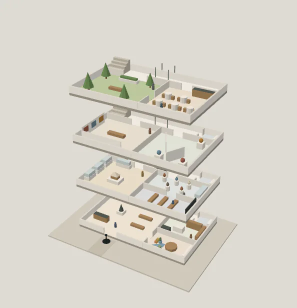

4층
지붕 위 정원과 카페가 있는 층이에요. 쉬어 가기 좋아요.
전시실을 고르면 설명과 가는 길을 볼 수 있어요.
이 층의 편의시설
- 엘리베이터
- 계단

4층짜리 작은 박물관이에요. 지금 계신 곳은 1층 입구예요.
끌어서 건물을 돌리고, 휠로 가까이 볼 수 있어요.
옆으로 밀어 건물을 돌리고, 두 손가락으로 가까이 볼 수 있어요.
층을 고르면 그 층을 앞으로 꺼내 보여 줘요.
목록에서 층과 전시실을 고르면 설명을 볼 수 있어요.
지붕 위 정원과 카페가 있는 층이에요. 쉬어 가기 좋아요.
전시실을 고르면 설명과 가는 길을 볼 수 있어요.
그림과, 때마다 주제가 바뀌는 기획 전시를 보는 층이에요.
전시실을 고르면 설명과 가는 길을 볼 수 있어요.
옛날 살림살이와 도자기를 보는 층이에요.
전시실을 고르면 설명과 가는 길을 볼 수 있어요.
입구가 있는 층이에요. 로비에 안내 데스크가 있어요.
전시실을 고르면 설명과 가는 길을 볼 수 있어요.
4층, 계단 쪽, 지붕 없는 곳
지붕 위에 꾸민 작은 정원이에요. 나무 사이 의자에서 쉴 수 있어요.
엘리베이터나 계단으로 4층에 올라와 계단 쪽으로 나가요.
4층, 계단 반대쪽
정원을 내다보며 쉬는 카페예요.
엘리베이터나 계단으로 4층에 올라와 계단 반대쪽으로 가요.
3층, 계단 쪽
벽을 따라 그림을 건 긴 방이에요. 가운데에 앉을 의자가 있어요.
엘리베이터나 계단으로 3층에 올라와 계단 쪽으로 가요.
3층, 계단 반대쪽
때마다 주제를 바꿔 여는 전시실이에요. 칸막이로 길을 나눠 두었어요.
엘리베이터나 계단으로 3층에 올라와 계단 반대쪽으로 가요.
2층, 계단 쪽
옛날 부엌살림과 생활 도구를 모은 방이에요.
엘리베이터나 계단으로 2층에 올라와 계단 쪽으로 가요.
2층, 계단 반대쪽, 엘리베이터 가까이
그릇과 항아리를 유리장 안에 놓아 둔 방이에요.
엘리베이터나 계단으로 2층에 올라와 계단 반대쪽으로 가면 바로 있어요.
2층, 계단 반대쪽 끝
전시를 짧은 영상으로 소개하는 방이에요. 의자에 앉아 볼 수 있어요.
엘리베이터나 계단으로 2층에 올라와 도자기 전시실을 지나 안쪽으로 가요.
1층, 입구 바로 안
들어오면 바로 보이는 넓은 곳이에요. 안내 데스크와 의자가 있어요.
입구로 들어오면 바로 로비예요.
1층, 로비 오른쪽 안
전시와 어울리는 엽서와 작은 물건을 파는 가게예요.
입구로 들어와 로비 오른쪽 안으로 가요. 엘리베이터 앞 복도에 문이 있어요.
1층, 로비 오른쪽
아이들이 만지고 놀며 배우는 방이에요. 낮은 탁자와 블록이 있어요.
입구로 들어와 오른쪽으로 가요.